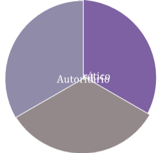

Liderazgo
Liderazgo significa unir a la gente en la búsqueda de una causa común, desarrollar un plan para lograrlo y adherirse a él hasta alcanzar el objetivo. Si el líder ejerce un cargo público o privado con otras responsabilidades definidas, el liderazgo también exige la capacidad para llevar a cabo esas tareas y responder a los problemas imprevistos y a las oportunidades cuando se presentan. Los une la perseverancia en la búsqueda de un objetivo y la flexibilidad para determinar la mejor manera de lograrlo. El valor de tomar una decisión difícil, y la confianza para mantenerla y explicarla. El sentido común para escuchar a los demás y hacer que participen. Y la fortaleza para aceptar cuando te equivocas o cuando una determinada política no está funcionando. Es un proceso de influencia sobre una persona o grupo en la consecución de una meta.
Las primeras corrientes del liderazgo centraron su atención en las tareas o en las relaciones humanas. De estos intereses surgieron dos movimientos: por un lado, el enfocado en los resultados y por el otro, el enfocado en las relaciones.
Teorías sobre el liderazgo
El liderazgo constituye uno de los temas administrativos más investigadas y estudiados en las últimas décadas. Las teorías sobre liderazgo formuladas por los autores de las relaciones humanas pueden clasificarse en tres grupos, cada uno de los cuales tiene sus propias características:
1- Teorías de rasgos de personalidad
Son las teorías más antiguas respecto del liderazgo. Un rasgo es una cualidad o característica distintiva de la personalidad. Según estas teorías, el líder posee rasgos específicos de personalidad que lo distinguen de las demás personas, es decir, tiene características de personalidad que le permiten influir en el comportamiento de sus semejantes.
2- Teorías de estilos de liderazgo
Estudian el liderazgo en cuanto a estilos de comportamiento del líder frente a los subordinados. Mientras el enfoque de rasgos apunta a lo que es el líder, el enfoque de estilos de liderazgo se refiere a lo que hace el líder, a su manera de comportarse en el ejercicio del liderazgo.
Esta teoría señala tres tipos de liderazgo
3- Teorías situacionales del liderazgo
Las teorías situacionales parten de un contexto más amplio y pregonan que no existe un único estilo o característica de liderazgo válido en cualquier situación. Lo contrario sí es verdadero: cada situación requiere un tipo de liderazgo para liderar con éxito los subordinados. Las teorías situacionales son más atractivas para el gerente puesto que aumentan sus opciones y sus posibilidades de cambiar la situación para adecuarla a un modelo de liderazgo o cambiar el modelo de liderazgo para adecuarlo a la situación. El líder debe adaptarse a un grupo de personas en condiciones variadas. La ascendencia de un líder depende mucho más de la posición estratégica que ocupa en la red de comunicaciones, que de sus características de personalidad. Al poco tiempo, el enfoque situacional de liderazgo comenzó a ganar terreno.
Comunicación
Es el intercambio de información entre personas. Significa volver común un mensaje o una información. Constituye uno de los procesos fundamentales de la experiencia humana y la organización social. La comunicación requiere un código para enviar el mensaje en forma de señal (ondas sonoras, letras impresas, símbolos) a través de determinado canal (aíre, alambres, papel) a un receptor que lo descodifica e interpreta su significado. La comunicación oral directa, es decir, la conversación, emplea el lenguaje como código y lo refuerza con elementos de comunicación no verbales (gestos, señales, símbolos). La comunicación interpersonal también puede intercambiar mensajes a distancia mediante la escritura, El teléfono o de internet.
Los experimentos sobre liderazgo permitieron concentrar ia atención en las oportunidades de escuchar y aprender en grupo, y evaluar los problemas da comunicación intergrupal en las empresas. Se identificó la necesidad de aumentar la competencia de los administradores a través del trato interpersonal para superar los problemas de comunicación y aumentar la confianza y franqueza en las relaciones humanas. En este sentido, la Teoría de las relaciones humanas creó una presión sensible sobre la administración para modificar los métodos rutinarios de dirigir las organizaciones y las personas.
El enfoque de las relaciones humanas reveló las fallas de comunicación en las organizaciones y alertó a los administradores para que:
- Garantizaran la participación de las personas de los niveles inferiores en la solución de los
problemas de la empresa.
- Incentivaran la franqueza y la confianza entre las personas y los grupos en las empresas.
- La comunicación es una actividad administrativa que tiene dos propósitos fundamentales.
- Proporcionar la información y la explicación necesarias para que las personas puedan
desempeñar sus tareas.
- Adoptar las actitudes necesarias que promuevan la motivación, la cooperación y la satisfacción
en los cargos.